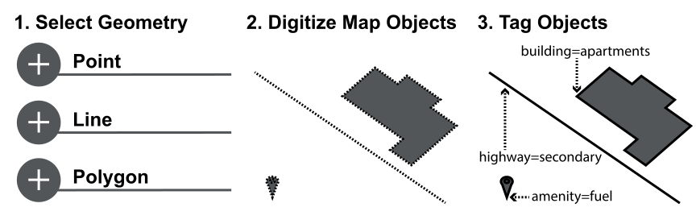

Objectives
This research experimented with random forest models on OpenStreetMap (OSM) data to:- Detect outlier geographic objects based on nearest neighbour distances and geometry
- Determine the influence of variables for the discovered pattern
1.0 Introduction
OpenStreetMap (OSM) is an online platform that enables volunteers to contribute massive quantities of data by creating geographic objects with user assigned tags (Figure 1). These tags are structured as key-value pairs that enable machine learning algorithms to support user editing by identifying outlier objects and discovering patterns. This results in lowered search times for errorneous objects and user knowledge enhancements.  Figure 1. OpenStreetMap Contribution Process2.0 Data and Methods
The data was downloaded from Mapzen Metro Extracts (Mapzen, 2016) and processed with an automated workflow programmed in Python (Figure 2). The random forest algorithm uses an implementation from the Scikit-learn Python library (Pedregosa et al., 2011). Figure 2. Automated Python Workflow3.0 Results
A random forest model with 128 trees was used to detect outliers in a selection of Toronto, Ontario, Mapzen data (Table 1). Hospital objects from the Sunnybrook wings (Figure 3) and several historical school objects (Figure 4) were detected as outliers with the top 5 contributing variables using the median as an example.Table 1. Selected Mapzen OSM Data for Toronto, Ontario
| Category | Geometry | Number of Objects |
|---|---|---|
| Aero Ways | Line | 438 |
| Amenities | Point | 1507 |
| Places | Point | 760 |
| Roads | Line | 46,812 |
| Transport Areas | Polygon | 72 |
| Transport Points | Point | 21,309 |
Figure 3. Sunnybrook Hospital Outliers
Figure 4. Historical School Outliers
4.0 Conclusion
User experience improvements using random forest models could:- Encourage participation in volunteered geographic data collection
- Improve the knowledge of inexperienced contributors
- Lower search times for irregular objects
- Improve the interpretability of data patterns in OSM

{kind=link}
{kind=link}
{kind=link}
{kind=link}